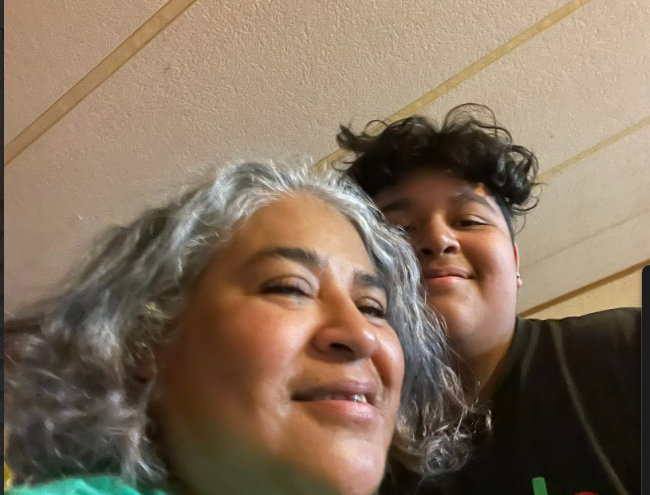

Unit 1
Density
There is a high density of cars in the faculty parking lot during the school day
Time Space Compression

My car alows me to interact with my friends in Sedro outside of school, even though I live in Mount Vernon.
Spatial Distribution
There are clusters of people at the courtyard during lunch on a school day.
Political Map
This Political Map of the United States shows the official borders of the 50 states.
Unit 2
Dependancy Ratio
My brothers and I depend on my mother for shelter food, and other necessities.
Life Expectancy
My Grandma is 54 years old and the llife expectancy in America is 76.
Voluntary Migration
My Mom voluntarily migrated to the United States with her sibilings and her parents.
Pull Factor
My grandpas job was a pull factor for him to immigrate to America.
Unit 3
Ethnicity
I am Mexican. My familys ethnicity is Mexican. My family comes from Mexico.
Material Culture
These figures are a part of my familys mexican culture
Multilingual
I speak English and Spanish.
Universalizing Religion
This Christian Church is always trying to recruit others to their religion. My Grandma and them have been trying to recruit me for 16 years.
Unit 4
Demarcated Boundary
The Fence behind me marks property line between my neighbors house and mine.
Devolution
The Skagit County Court has some power that was given from the Washington Government, which gets its power from the federal government.
Federal State
The United States of America is a federal state, with multiple multiple governments with less power, such as the Washington Government.
Natural Boundary
The Skagit County River separates Burlington and Mount Vernon.
Unit 5
Domestication
My Family's chicken coup gives us eggs from the chickens,
who are trapped in the coup with no hope of getting out. (They dont deserve it).
Market Gardening
My Neighbors grow flowers in their back and front yard to sell.
Organic Food
Safeway sells food that is organic,
otherwise known as food that hasnt been grown with chemicals.
Subsistance Agriculture
My Grandma grows blueberries and cilantro for us as a familly to eat.
Unit 6
Central Business District

Burlington Boulevard is the Central business district in Burlington, as that is where the most businesses are located.
City

Mount Vernon is a city within Skagit County
Gated Community
This Community of homes is in Mount Vernon, which enterence is blocked by a gete.
Settlement
People and families have settled in this neighborhood that they called home.
Unit 7
Globalization
Firehouse subs has fast food in 3 countries, including Canada and the U.S.
Transnational Corporation
Mcdonalds is based in the United States but has locations and investments around the world.
Quaternary Sector

Mount Vernon contains lots of goods and services with stores all around.
Core Country
The United States is a core country, as it is very devveloped.
Honorable Mentions
Business Parks
This Business park that is located on the border of Mount Vernon is home to several business.
Monolingual
My Friend Chrissy only speaks English